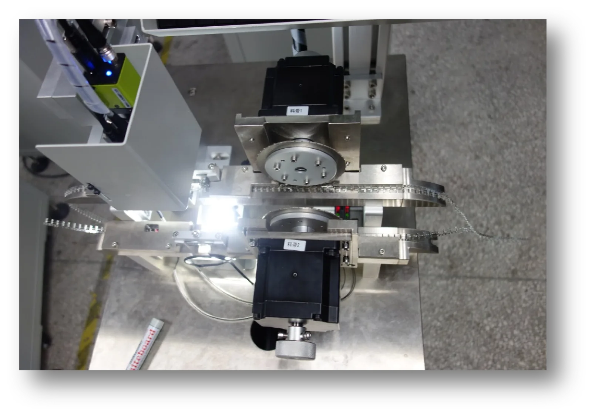

Peralatan inspeksi inline untuk konektor

•Inspeksi otomatis penuh untuk menekan biaya dan meningkatkan efisiensiDilengkapi algoritma inspeksi visi cerdas dan beroperasi secara otomatis di seluruh proses untuk menggantikan inspeksi visual manual. Peralatan ini menekan biaya tenaga kerja secara signifikan sekaligus mencegah kesalahan manusia guna menjaga konsistensi dan stabilitas inspeksi.
•Pengukuran menyeluruh untuk parameter utamaInspeksi konektor secara presisiJarak antar-tepi apa pun, sekaligus kompatibel dengan pengukuran dimensi penting seperti konektor bundar dan jarak terminal, untuk memenuhi berbagai kebutuhan inspeksi dalam satu sistem.
•Kompatibilitas tinggi untuk beragam skenarioMendukungberbagai spesifikasi dan jenisinspeksi konektor tanpa perlu sering mengganti peralatan atau menyesuaikan arsitektur inti, sehingga dapat mengakomodasi model produksi multiproduk pada lini produksi.
•Data tertelusur untuk analisis kualitasData inspeksi disimpan secara waktu nyata dan mendukung kueri serta ekspor data historis dan analisis tren, sehingga menyediakan data yang andal untuk optimalisasi proses produksi dan penelusuran masalah kualitas.
•Toleransi yang dapat disesuaikan dan penentuan kepatuhan cerdasPengguna dapat menetapkan ambang toleransi secara mandiri. Sistem secara otomatis membandingkan data pengukuran dengan rentang standar dan dengan cepat menentukan status kepatuhan benda kerja, sehingga meningkatkan efisiensi dan akurasi kontrol kualitas.
Ruang lingkup inspeksi: untuk menginspeksi tampilan, dimensi, bentuk, dan aspek lain dari berbagai konektor, terminal, pin, transformator kecil, dan komponen elektronik lainnya
•Inspeksi otomatis penuh untuk menekan biaya dan meningkatkan efisiensiDilengkapi algoritma inspeksi visi cerdas dan beroperasi secara otomatis di seluruh proses untuk menggantikan inspeksi visual manual. Peralatan ini menekan biaya tenaga kerja secara signifikan sekaligus mencegah kesalahan manusia guna menjaga konsistensi dan stabilitas inspeksi.
•Pengukuran menyeluruh untuk parameter utamaInspeksi konektor secara presisiJarak antar-tepi apa pun, sekaligus kompatibel dengan pengukuran dimensi penting seperti konektor bundar dan jarak terminal, untuk memenuhi berbagai kebutuhan inspeksi dalam satu sistem.
•Kompatibilitas tinggi untuk beragam skenarioMendukungberbagai spesifikasi dan jenisinspeksi konektor tanpa perlu sering mengganti peralatan atau menyesuaikan arsitektur inti, sehingga dapat mengakomodasi model produksi multiproduk pada lini produksi.
•Data tertelusur untuk analisis kualitasData inspeksi disimpan secara waktu nyata dan mendukung kueri serta ekspor data historis dan analisis tren, sehingga menyediakan data yang andal untuk optimalisasi proses produksi dan penelusuran masalah kualitas.
•Toleransi yang dapat disesuaikan dan penentuan kepatuhan cerdasPengguna dapat menetapkan ambang toleransi secara mandiri. Sistem secara otomatis membandingkan data pengukuran dengan rentang standar dan dengan cepat menentukan status kepatuhan benda kerja, sehingga meningkatkan efisiensi dan akurasi kontrol kualitas.
Ruang lingkup inspeksi: untuk menginspeksi tampilan, dimensi, bentuk, dan aspek lain dari berbagai konektor, terminal, pin, transformator kecil, dan komponen elektronik lainnya



Inspeksi pita tunggalInspeksi pita gandaInspeksi multipita